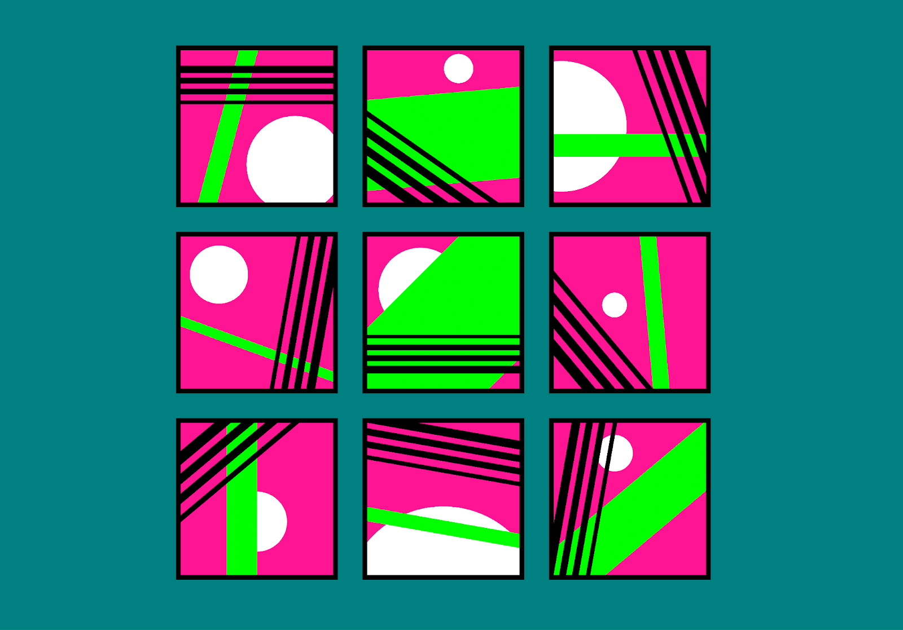

Супер реклама!
Изучай CSS и стань профи!
Скидка 50% на курсы
Торопись!
Определение CSS

Каскадные таблицы
Каскадные таблицы стилей (CSS) — это мощный механизм, позволяющий описать правила оформления HTML документа, отделить их от содержания. CSS, как прогрессивная и востребованная технология, проходит долгий путь развития и совершенствования. Давай посмотрим, как всё начиналось! Для начала включим машину времени и окунёмся ненадолго в прошлое.
Хокон Виум Ли предложил концепцию каскадных таблиц стилей.
Тим Бернерс-Ли — учёный, изобретатель URI, URL, HTTP, HTML, создатель Всемирной паутины (совместно с Робертом Кайо) и действующий глава Консорциума Всемирной паутины.
CSS 2.1
8 сентября 2009 года утверждена CSS2.1. Это попытка привести спецификацию в соответствие с реалиями:
- исправлен ряд ошибок CSS2;
- изменились некоторые моменты, реализация которых в браузерах отличается от спецификации;
- убрали нереализованные особенности;
- удалили фрагменты, устаревшие в CSS3;
- добавили новые значения свойств.
CSS 3
Результаты эксперимента (одна страница на CSS2 и CSS3):
| Параметр | CSS2 | CSS3 | Результаты |
|---|---|---|---|
| Время разработки | 73 мин | 49 мин | CSS3 33% быстрее |
| Размер | 849.2 KB | 767.9 KB | CSS3 9.5% меньше |
| Запросы | 22 | 12 | CSS3 45% меньше |